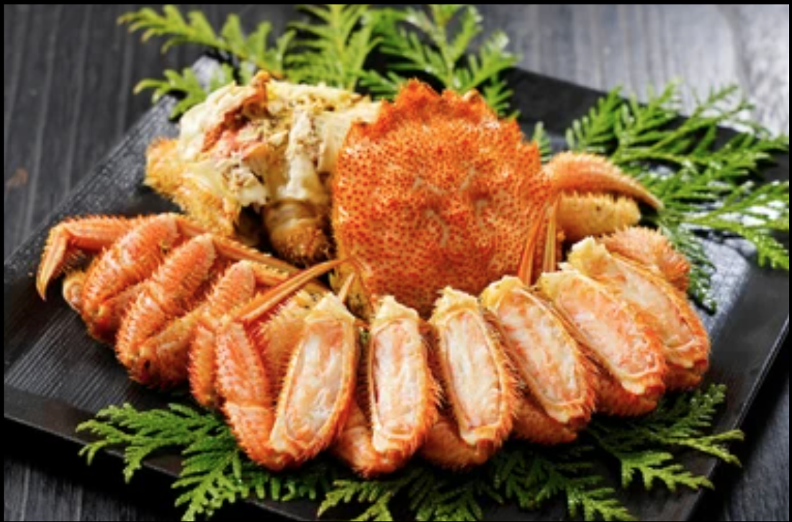
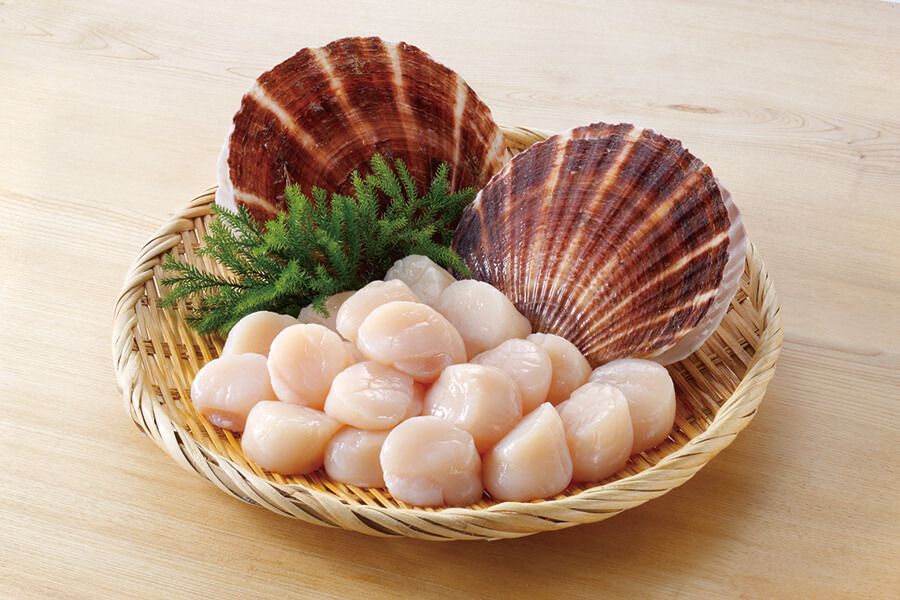
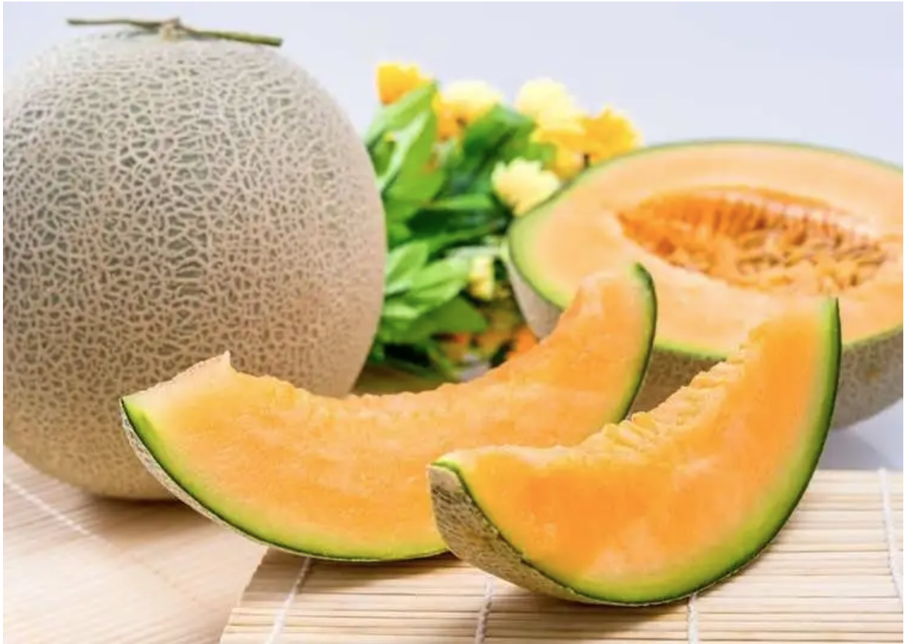
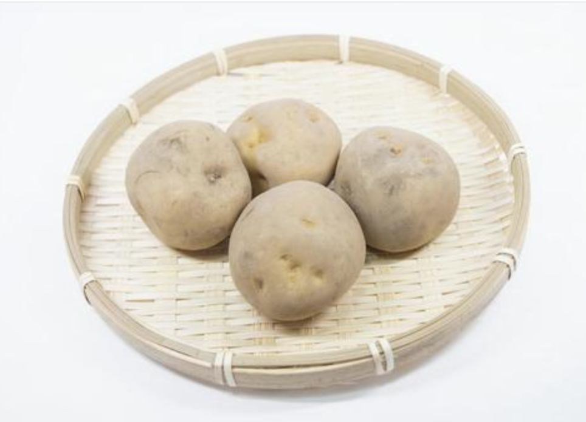

特産品
-

- 毛ガニ
- 北海道の毛ガニは、地域ごとによって旬が異なる。函館は冬から春にかけて、釧路は秋といった具合だ。 地域によって旬が異なるので、北海道では１年じゅう旬のカニを食べることが出来る。
-

- ホタテ
- 北海道では、地撒き式と垂下式の二つの漁が行われており、地撒き式は夏、垂下式は春に多く水揚げされている。 北海道のホタテは、栄養価が高いのが特徴で、特にアミノ酸が多く含まれている。
-

- 夕張メロン
- 北海道のメロンは、代表的なんのとして「夕張メロン」「富良野メロン」「らいでんメロン」がある。北海道の寒暖差がある気候は、 メロン栽培に適しており、たくさんの養分を蓄えた糖度の高いメロンが取れる。
-

- ジャガイモ
- 北海道のジャガイモは、全国シェアの約８割を占めるほどであり、男爵イモ・メークイーンのほか、約５０種類もの品種が栽培されている。 ジャガイモには、ビタミンやカリウム等豊富な栄養素が含まれている。